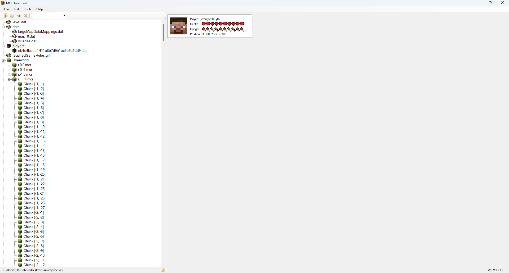

MCC Tool Chest
Présentation
Ce logiciel permet de modifier des cartes (map) comme universal minecraft editor et de les convertir. Également d'extraire les .arc .


Téléchargement
Télécharger (lien original)
Télécharger (lien1)
Télécharger (lien2)
Téléchargement : autres fichiers
Mise à jour (lien1)
Mise à jour (lien2)
Vidéos sur le logiciel
Mise à jour (lien2)